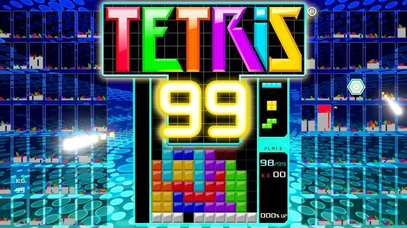
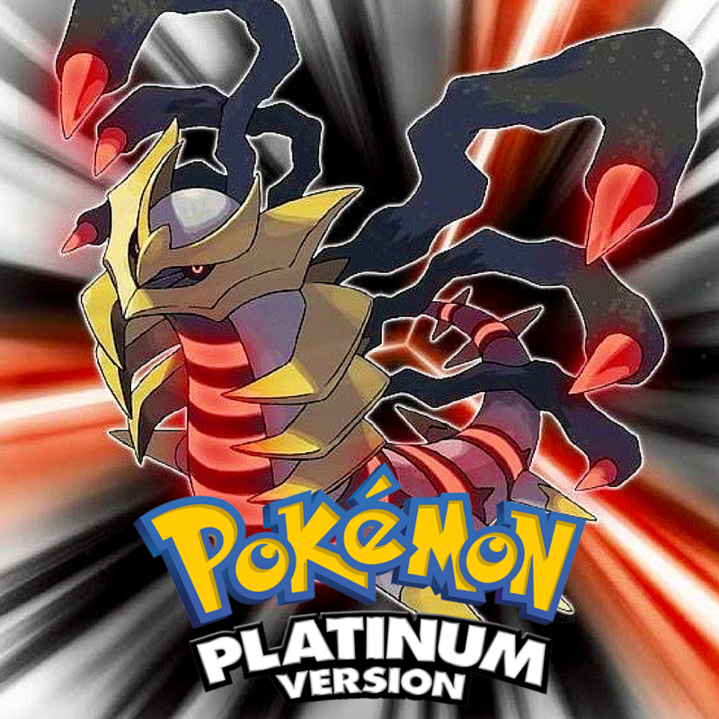
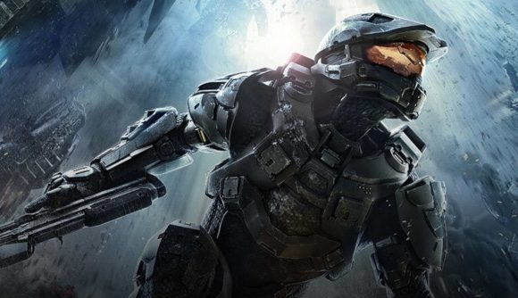
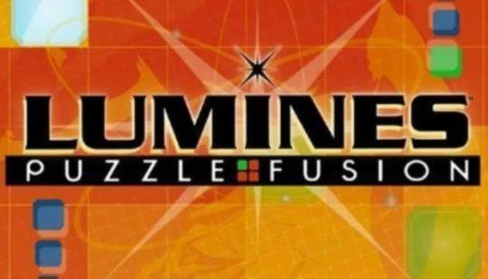

| Photo: |  |
| Title: | Tetris 99 |
| Subtitle: | 99 Players. One Winner! |
| Developer: | ARIKA |
| Publisher: | Nintendo |
| Description: | The free to download online software, Tetris® 99, is available as a special offer for Nintendo Switch Online members. In large-scale, 99-player battles, it'll take speed, skill, and strategy to knock out the competition and become the last player standing. You can target opponents by sending them Garbage Blocks, but be careful…your rivals can target you back! Defeat opponents to acquire KO badges that may give you the advantage on future attacks. Survive the onslaught and look forward to upcoming online events! |
| Photo: |  |
| Title: | Pokemon Platinum |
| Subtitle: | Following the vast popularity of Pokémon Diamond and Pokémon Pearl, Pokémon Platinum is the newest in the core series of Pokémon games. |
| Developer: | Game Freak |
| Publisher: | Nintendo |
| Description: | Pokémon Platinum features a new story full of adventure, never-before-seen forms of powerful Pokémon--including the legendary Giratina’s Origin Forme--and the Distortion World, a mysterious new world that suddenly appears in the Sinnoh region. In addition, with Pokémon Platinum up to 20 players can interact with other Pokémon fans from around the world in the new Wi-Fi Plaza, featuring mini-games and activities. Players can also enjoy the new features in the Global Terminal, such as posting battle videos using the new “Vs. Recorder.” In addition, Pokémon Platinum features a new Battle Frontier, where the toughest Trainers can test their skills in new ways. |
| Photo: |  |
| Title: | Halo 4 |
| Subtitle: | The 7th video game installment of the Halo fanchise. |
| Developer: | 343 Industries |
| Publisher: | Microsoft Studios |
| Description: | Witness the Master Chief’s triumphant return to battle an ancient evil bent on vengeance and annihilation. Shipwrecked on a mysterious world, faced with new enemies and deadly technology, the universe will never be the same. |
| Photo: |  |
| Title: | Lumines REMASTERED |
| Subtitle: | LUMINES REMASTERED is an HD remake of the original Lumines that debuted in 2004 on the PSP. |
| Developer: | Resonair |
| Publisher: | Enhance |
| Description: | Earning high praise and awards, it remained the top-rated title on the platform for four years and continued on to establish an action-puzzle series loved by millions of players. Relive the memories on PlayStation 4, Xbox One, Steam and for the first time on a Nintendo console! LUMINES REMASTERED beautifully marries the elements of sound, light and puzzle-action into one addictive, yet easy-to-play game. You’re at the center of the high-energy, block-dropping action while you groove to awesome house, trance and techno beats! |